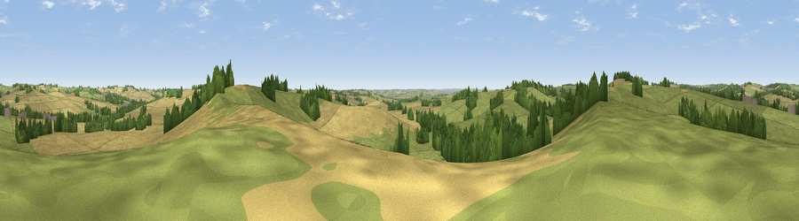

Viewpoint near East Norton
#30133 in England · top 35% of its area beats it · near East NortonWhere it is
The exact computed spot (SP 79375 99425). Click the marker for map links.
The view, rendered

A 360° render of this exact spot computed from the terrain model, tree cover and land cover — summer colours, afternoon light, calibrated against photographs of famous viewpoints. Real trees, hedges and buildings will differ in detail.
The panorama
Grey silhouette: terrain skyline in each direction (720 bearings, Earth curvature and refraction included). Dashed green: skyline with trees (+15 m) and buildings (+8 m) as obstacles. Blue strip: how far the ground is visible on each bearing.
Where the view opens
Wedge length = distance to the farthest visible ground on that bearing (vegetation-aware). Rings at 10, 25 and 50 km.
What fills the view
49% grassland · 41% cropland · 9% woodland
Angular shares of the visible panorama (visual magnitude), not map area. Landscape diversity 0.41 (0–1 Shannon).
Key numbers
More beautiful places nearby
The staircase of upgrades: each row has a higher view potential than everything closer. Driving times are estimates from straight-line distance, calibrated against real road routing — check an actual route before setting out.
| Place | Direction | Drive | Score |
|---|---|---|---|
| Viewpoint near East Norton | ESE · 1 km | ~2 min | 44.8 |
| Viewpoint near East Norton | WNW · 2 km | ~4 min | 53.2 |
| Robin-a-Tiptoe Hill | NNW · 5 km | ~11 min | 54.6 |
| Whatborough Hill | NNW · 7 km | ~15 min | 57.1 |
| Viewpoint near Cold Newton | NW · 10 km | ~19 min | 57.3 |
| Viewpoint near Burrough on the Hill | NNW · 13 km | ~24 min | 66.0 |
| Old John | WNW · 29 km | ~46 min | 70.3 |
| Broombriggs Hill | WNW · 31 km | ~49 min | 74.4 |
52.58685, -0.82985 · source: screening · position refined by local search. Computed location — check access rights before visiting.